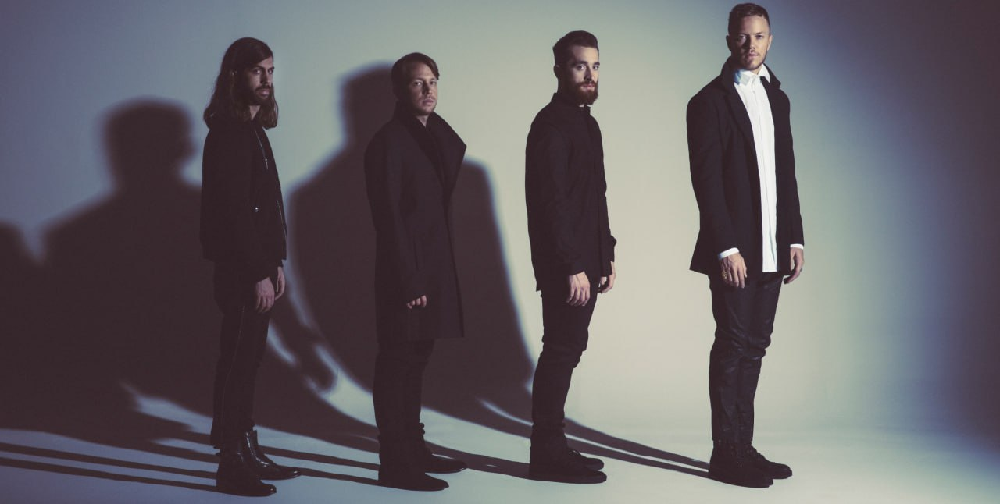

Главная
Общая информация
История
Дискография
Концертные туры
Источники
Контакты
Концертные туры

Imagine Dragons on Tour (2011—2012)
Fall Tour 2012 (2012)
Europe Tour 2012 (2012)
Night Visions Tour (2013)
Into the Night Tour (2014)
Smoke + Mirrors Tour (2015—2016)
Evolve Tour (2017—2018)
Mercury World Tour (2022)